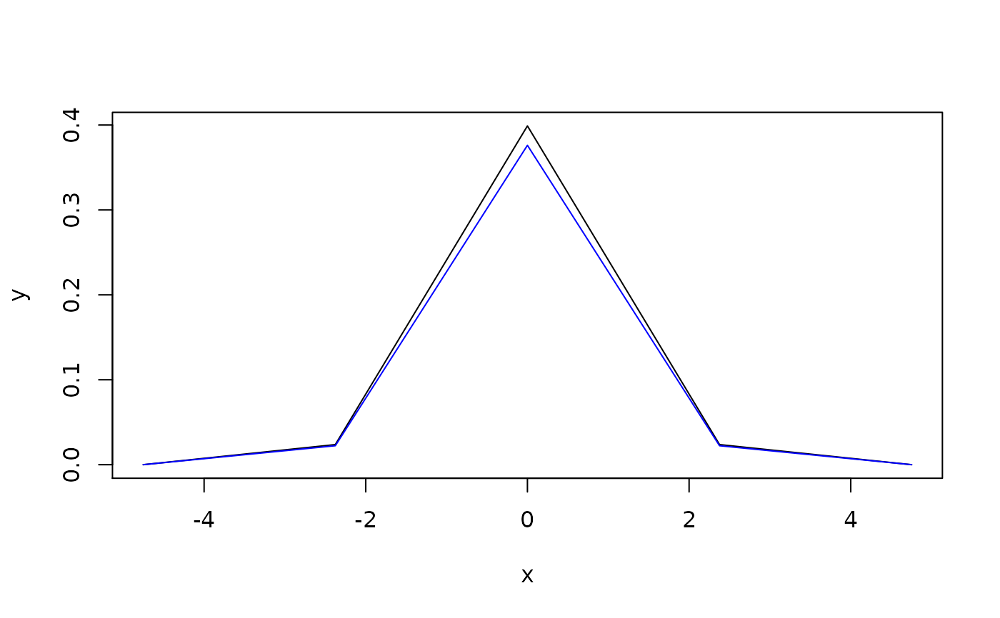

Function enpoint() suggests a reasonable default ways of converting
pdqr-function into a data frame of numerical values (points) with desirable
number of rows. Representation of pdqr-function as a set of numbers helps to
conduct analysis using approaches outside of 'pdqr' package. For example, one
can visually display pdqr-function with some other plotting functionality.
enpoint(f, n_points = 1001)| f | A pdqr-function. |
|---|---|
| n_points | Desired number of points in the output. Not used in case of
"discrete" type p-, d-, and q-function |
A data frame with n_points (or less, for "discrete" type p-, d-, or
q-function f) rows and two columns with names depending on f's class
and type.
Structure of output depends on class and
type of input pdqr-function f:
P-functions are represented with "x" (for "x" values) and "p" (for cumulative probability at "x" points) columns:
For "continuous" type, "x" is taken as an equidistant grid (with
n_points elements) on input's support.
For "discrete" type, "x" is taken directly from "x_tbl" metadata without using n_points argument.
D-functions are represented with "x" column and one more (for values of d-function at "x" points):
For "continuous" type, second column is named "y" and is computed as
values of f at elements of "x" column (which is the same grid as in
p-function case).
For "discrete" it is named "prob". Both "x" and "prob" columns are taken from "x_tbl" metadata.
Q-functions are represented almost as p-functions but in inverse
fashion. Output data frame has "p" (probabilities) and "x" (values of
q-function f at "p" elements) columns.
For "continuous" type, "p" is computed as equidistant grid (with
n_points elements) between 0 and 1.
For "discrete" type, "p" is taken from "cumprob" column of "x_tbl" metadata.
R-functions are represented by generating n_points elements from
distribution. Output data frame has columns "n" (consecutive point number,
basically a row number) and "x" (generated elements).
Note that the other way to produce points for p-, d-, and q-functions is
to manually construct them with form_regrid() and meta_x_tbl(). However,
this method may slightly change function values due to possible
renormalization inside form_regrid().
pdqr_approx_error() for diagnostics of pdqr-function approximation
accuracy.
Pdqr methods for plot() for a direct plotting of pdqr-functions.
form_regrid() to change underlying grid of pdqr-function.
#> x y
#> 1 -4.753424 4.948343e-06
#> 2 -4.743917 5.176854e-06
#> 3 -4.734411 5.415429e-06
#> 4 -4.724904 5.664486e-06
#> 5 -4.715397 5.924463e-06
#> 6 -4.705890 6.195811e-06
# Control number of points with `n_points` argument
enpoint(d_norm, n_points = 5)#> x y
#> 1 -4.753424e+00 4.948343e-06
#> 2 -2.376712e+00 2.367544e-02
#> 3 -2.904343e-12 3.989431e-01
#> 4 2.376712e+00 2.367544e-02
#> 5 4.753424e+00 4.948343e-06
# Different pdqr classes and types produce different column names in output
colnames(enpoint(new_p(1:2, "discrete")))#> [1] "x" "p"#> [1] "x" "prob"#> [1] "x" "y"#> [1] "p" "x"#> [1] "n" "x"
# Manual way with different output structure
df <- meta_x_tbl(form_regrid(d_norm, 5))
# Difference in values due to `form_regrid()` renormalization
plot(enpoint(d_norm, 5), type = "l")